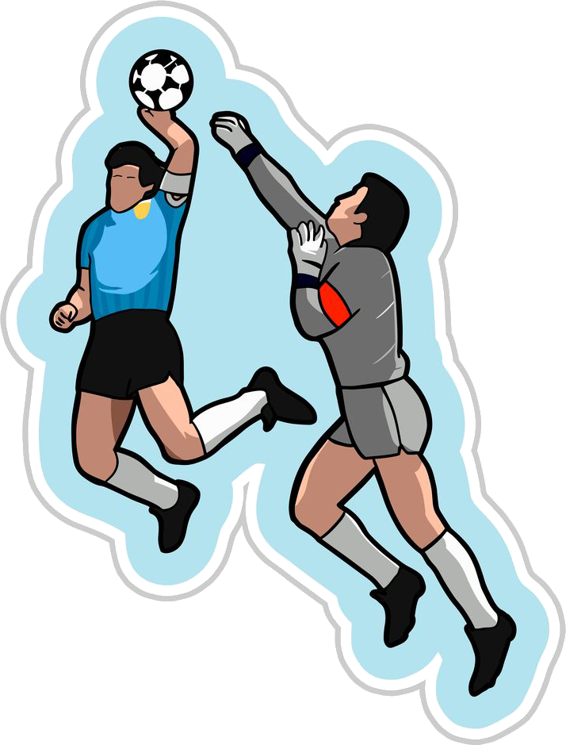
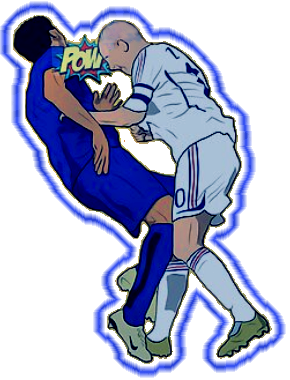
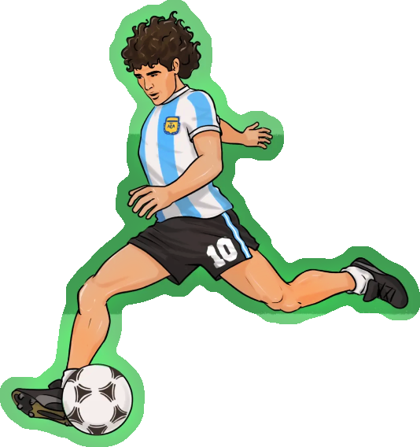
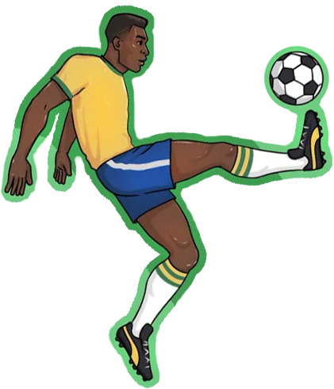
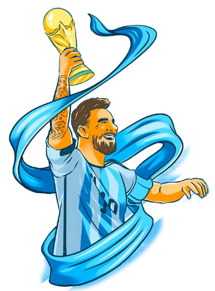
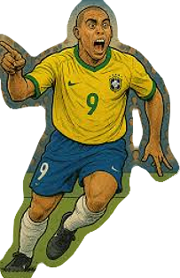

Gallery
Behind Every Picture, a Story
Click on the image to see details
1986
In the 1986 World Cup in Mexico, Maradona scored with his hand against England in a 2-1 win. Argentina advanced and claimed the title after a thrilling 3-2 victory over West Germany.

2006
In the 2006 World Cup final in Germany, Zidane headbutted Italy’s Materazzi and was sent off. The match ended 1-1, and Italy won the title 5-3 on penalties.

1994
In the 1994 World Cup in the USA, Maradona was expelled after a positive doping test following the Nigeria match. Argentina later exited in the Round of 16, while Brazil beat Italy on penalties.

1958
Pelé, the Brazilian legend, won three World Cups (1958, 1962, 1970), scored crucial final goals, debuted at 17, and became the first player to achieve such historic records globally.

2022
In the 2022 World Cup in Qatar, Argentina, led by Messi, drew 3-3 with France in the final and won 4-2 on penalties, claiming the World Cup title.

2002
Ronaldo, “The Phenomenon,” won two World Cups with Brazil: 1994 (squad member, no matches, Brazil beat Italy on penalties) and 2002, scoring twice in a 2-0 final win over Germany.
Facts
Did You Know?
-
1930
Only 13 nations competed in the first tournament
-
1904
FIFA was founded, organizing the World Cup
-
1942
Tournament cancelled due to World War II
-
1950
World Cup returned after 12-year break
-
1994
First tournament held outside Europe and South America
-
1998
Number of teams increased to 32
-
2002
First jointly hosted World Cup in Japan and Korea
-
2026
48 teams will participate for the first time